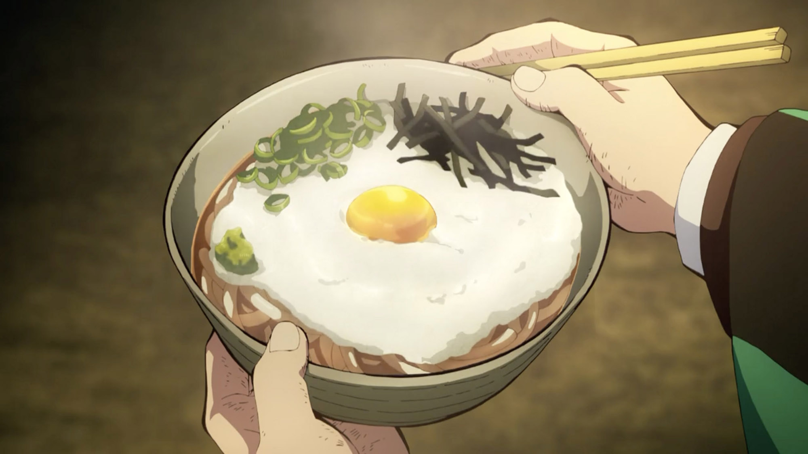

Tanjiro's Udon Noodle Soup

In Demon Slayer: Kimetsu no Yaiba, Tanjiro enjoys a comforting bowl of udon, a classic Japanese noodle dish. This hearty meal features thick, chewy wheat noodles served in a savory broth, often made from soy sauce, dashi, and mirin. The dish is typically garnished with toppings like green onions, tempura, kamaboko (fish cake), or a soft-boiled egg, adding layers of flavor and texture.
Tanjiro's love for udon reflects the simplicity and warmth of traditional Japanese cuisine, offering a moment of solace amidst his challenging journey as a demon slayer. The dish is not just a source of nourishment but also a reminder of the comforting traditions of home.
Ingredients:
- 300g Udon Noodles
- 4 egg
- 500mL Dashi
- 1 tbsp soy sauce
- 1 tbsp Mirin
- ½ tbsp Sugar
- 1/4 tsp salt
Directions:
- Boil 1 liter of water.
- When the water comes to a boil, turn the heat off and add 3/4 cup of cold water, then gently add the eggs.
- Cover your pot for 15-20 minutes (17 is generally the sweet spot) and then submerge the eggs in a bowl of cold water for 5-10 minutes.
- Add dashi to a frying pan and bring it to boil.
- Season with soy sauce, mirin, sugar, and salt. Set aside once seasoning is adjusted properly.
- Put the cooked udon noodles into bowls.
- Pour the broth over your udon noodles.
- Crack an onsen tamago over the udon and sprinkle on green onion.
Home